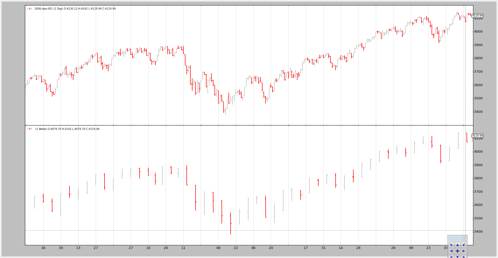
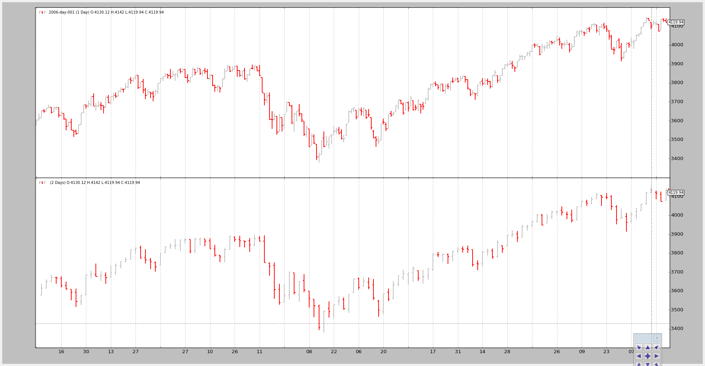
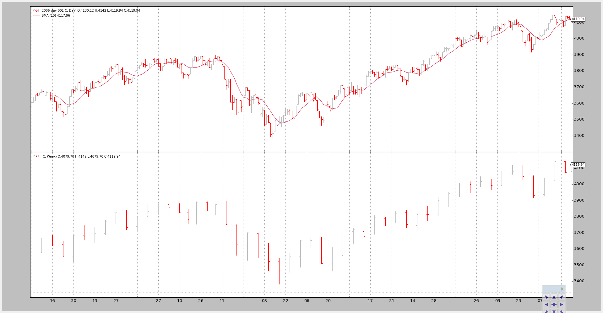
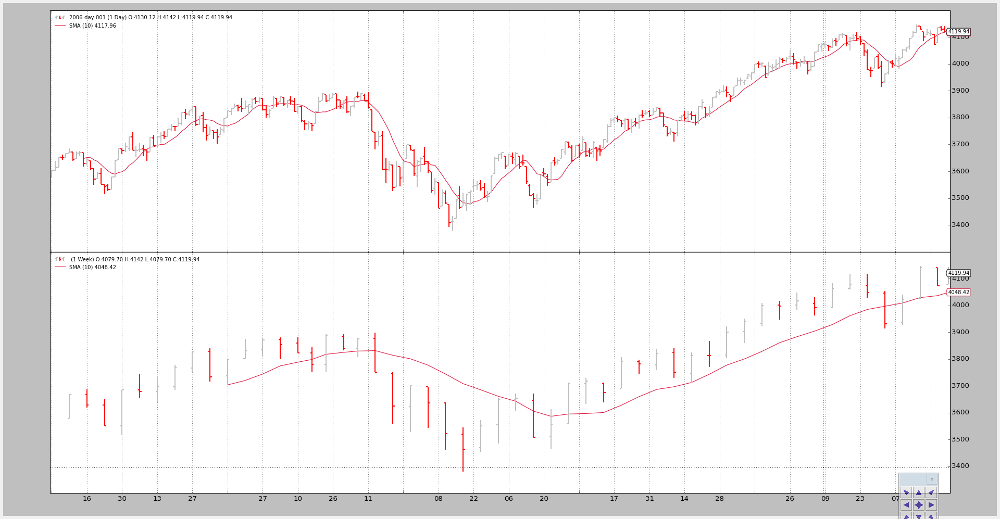

Sometimes investing decisions are taken using different timeframes:
- Weekly to evaluate the trend
- Daily to execute the entry
Or 5 minutes vs 60 minutes.
That implies that combining datas of multiple timeframes in backtrader is
needed to support such combinations.
Native support for it is already built-in. The end user must only follow these rules:
- The data with the smallest timeframe (and thus the larger number of bars) must be the 1st one to be added to the Cerebro instance
- The datas must be properly date-time aligned for the platform to make any sense out of them
Beyond that, the end-user is free to apply indicators as wished on the shorter/larger timeframes. Of course:
- Indicators applied to larger timeframes will produce less bars
The platform will also have the following into account
- The minimum period for larger timeframes
Minimum period which will probably have the side effect of having to consume several orders of magnitude of the smaller timeframe bars before a Strategy added to Cerebro kicks into action.
The built-in cerebro.resample is going to be used to create a larger timeframe.
Some examples below, but first the sauce of the test script.
# Load the Data
datapath = args.dataname or '../../datas/2006-day-001.txt'
data = btfeeds.BacktraderCSVData(dataname=datapath)
cerebro.adddata(data) # First add the original data - smaller timeframe
tframes = dict(daily=bt.TimeFrame.Days, weekly=bt.TimeFrame.Weeks,
monthly=bt.TimeFrame.Months)
# Handy dictionary for the argument timeframe conversion
# Resample the data
if args.noresample:
datapath = args.dataname2 or '../../datas/2006-week-001.txt'
data2 = btfeeds.BacktraderCSVData(dataname=datapath)
# And then the large timeframe
cerebro.adddata(data2)
else:
cerebro.resampledata(data, timeframe=tframes[args.timeframe],
compression=args.compression)
# Run over everything
cerebro.run()
The steps:
Load a data
Resample it according to the user specified arguments
The script also allows for loading a 2nd data
Add the data to cerebro
Add the resampled data (larger timeframe) to cerebro
run
The invocation of the script:
$ ./multitimeframe-example.py --timeframe weekly --compression 1
And the output chart:
The invocation of the script:
$ ./multitimeframe-example.py --timeframe daily --compression 2
And the output chart:
Although plotting is nice, the key issue here is showing how the larger timeframe influences the system, especially when it comes down to the starting point
The script can take a --indicators to add a strategy which creates simple
moving averages of period 10 on the smaller an larger timeframe datas.
If only the smaller timeframe was taken into account:
nextwould be called first after 10 bars, which is the time the Simple Moving Average needs to produce a valueNote
Remember that Strategy monitors created indicators and only calls
nextwhen all indicators have produced a value. The rationale is that the end user has added the indicators to use them in the logic and thus no logic should take place if the indicators have produced no values
But in this case the larger timeframe (weekly) delays the invocation of next
until the Simple Moving Average oon the weekly data has produced a value, which
takes … 10 weeks.
The script overrides nextstart which is only called once and which defaults
to calling next to show when it is first called.
Only the smaller timeframe, daily, gets a Simple Moving Average
The command line and output
$ ./multitimeframe-example.py --timeframe weekly --compression 1 --indicators --onlydaily
--------------------------------------------------
nextstart called with len 10
--------------------------------------------------
And the chart.
Both timeframes get a Simple Moving Average
The command line:
$ ./multitimeframe-example.py --timeframe weekly --compression 1 --indicators
--------------------------------------------------
nextstart called with len 50
--------------------------------------------------
--------------------------------------------------
nextstart called with len 51
--------------------------------------------------
--------------------------------------------------
nextstart called with len 52
--------------------------------------------------
--------------------------------------------------
nextstart called with len 53
--------------------------------------------------
--------------------------------------------------
nextstart called with len 54
--------------------------------------------------
Two things to notice here:
Instead of being called after 10 periods, the strategy is 1st called after 50 periods.
It is so because the Simple Moving Average applied on the larger (weekly) timeframe produces a value after 10 weeks … and that is 10 weeks * 5 days / week … 50 days
nextstartgets called 5 times rather than only 1.This is a natural side effect of having mixed the timeframe and having (in this case only one) indicators applied to the larger timeframe.
The larger timeframe Simple Moving Average produces 5 times the same value whilst 5 daily bars are being consumed.
And because the start of the period is being controlled by the larger timeframe
nextstartgets called 5 times.
And the chart.
Multiple Timeframe Datas can be used in backtrader with no special objects
or tweaking: just add the smaller timeframes first.
The test script.
from __future__ import (absolute_import, division, print_function,
unicode_literals)
import argparse
import backtrader as bt
import backtrader.feeds as btfeeds
import backtrader.indicators as btind
class SMAStrategy(bt.Strategy):
params = (
('period', 10),
('onlydaily', False),
)
def __init__(self):
self.sma_small_tf = btind.SMA(self.data, period=self.p.period)
if not self.p.onlydaily:
self.sma_large_tf = btind.SMA(self.data1, period=self.p.period)
def nextstart(self):
print('--------------------------------------------------')
print('nextstart called with len', len(self))
print('--------------------------------------------------')
super(SMAStrategy, self).nextstart()
def runstrat():
args = parse_args()
# Create a cerebro entity
cerebro = bt.Cerebro(stdstats=False)
# Add a strategy
if not args.indicators:
cerebro.addstrategy(bt.Strategy)
else:
cerebro.addstrategy(
SMAStrategy,
# args for the strategy
period=args.period,
onlydaily=args.onlydaily,
)
# Load the Data
datapath = args.dataname or '../../datas/2006-day-001.txt'
data = btfeeds.BacktraderCSVData(dataname=datapath)
cerebro.adddata(data) # First add the original data - smaller timeframe
tframes = dict(daily=bt.TimeFrame.Days, weekly=bt.TimeFrame.Weeks,
monthly=bt.TimeFrame.Months)
# Handy dictionary for the argument timeframe conversion
# Resample the data
if args.noresample:
datapath = args.dataname2 or '../../datas/2006-week-001.txt'
data2 = btfeeds.BacktraderCSVData(dataname=datapath)
# And then the large timeframe
cerebro.adddata(data2)
else:
cerebro.resampledata(data, timeframe=tframes[args.timeframe],
compression=args.compression)
# Run over everything
cerebro.run()
# Plot the result
cerebro.plot(style='bar')
def parse_args():
parser = argparse.ArgumentParser(
description='Multitimeframe test')
parser.add_argument('--dataname', default='', required=False,
help='File Data to Load')
parser.add_argument('--dataname2', default='', required=False,
help='Larger timeframe file to load')
parser.add_argument('--noresample', action='store_true',
help='Do not resample, rather load larger timeframe')
parser.add_argument('--timeframe', default='weekly', required=False,
choices=['daily', 'weekly', 'monhtly'],
help='Timeframe to resample to')
parser.add_argument('--compression', default=1, required=False, type=int,
help='Compress n bars into 1')
parser.add_argument('--indicators', action='store_true',
help='Wether to apply Strategy with indicators')
parser.add_argument('--onlydaily', action='store_true',
help='Indicator only to be applied to daily timeframe')
parser.add_argument('--period', default=10, required=False, type=int,
help='Period to apply to indicator')
return parser.parse_args()
if __name__ == '__main__':
runstrat()
{kind=link}
{kind=link}
{kind=link}
{kind=link}